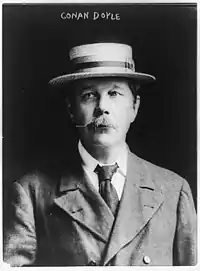
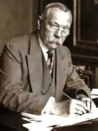
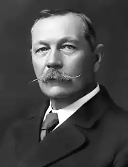
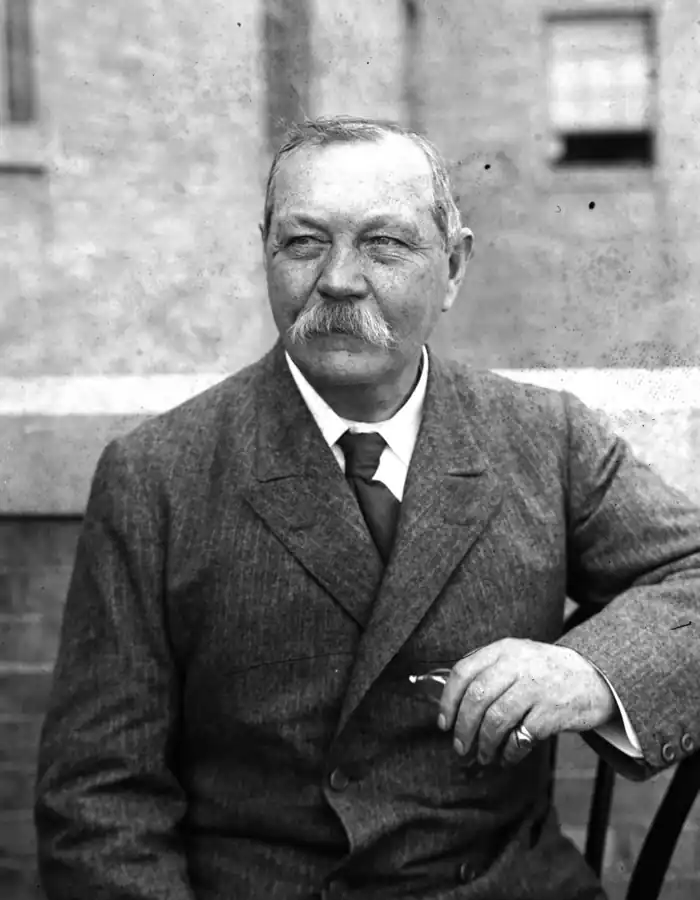
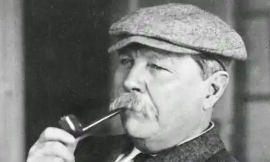
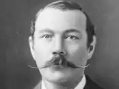

АРТУР КОНАН ДОЙЛ
(1859-1930)
Англійський письменник, публіцист і журналіст Артур Ігнаті-ус Конан Дойл народився 22 травня 1859 року в столиці Шотландії Единбурзі на Пікарді-плейс в сім'ї художника й архітектора. Його батько Чарльз Алтамонт Дойл одружився з Мері Фолі в 1855 році. Мері Дойл мала пристрасть до книжок і була головним оповідачем у сім'ї, і згодом Артур дуже зворушливо згадував про неї. На жаль, батько Артура був хронічним алкоголіком, і тому сім'я іноді бідувала, хоча він і був, за словами свого сина, дуже талановитим художником. У дитинстві Артур багато читав, мав різнобічні інтереси. Його улюбленим автором був Майн Рід, а улюбленою книжкою — "Мисливці за скальпами". Після того, як Артур досяг дев'яти років, упродовж семи років він повинен був ходити до школи-інтернату єзуїтів Ходдеру — підготовчої школи для Стоуніхерста. Через два роки Артур перебрався до Стоуніхерста. Там викладали кілька предметів: абетку, лічбу, граматику, синтаксис, поезію, риторику. Харчування там було убогим, до того ж учнів часто піддавали тілесним покаранням. Саме протягом цих важких років у школі-інтернаті Артур зрозумів, що він має талант до вигадування різних історій, отож його часто оточували захоплені молоді студенти, котрі слухали ці дивовижні оповіді, котрі він складав на розвагу їм. Різдвяними канікулами 1874 року він на три тижні на запрошення своїх родичів їде до Лондона. Там він відвідує театр, зоопарк, цирк, Музей воскових фігур мадам Тюссо. Він залишився дуже задоволений цією поїздкою. На останньому році навчання він випускає журнал коледжу і пише вірші. Крім того, він займався спортом, переважно крикетом. Потім їде до Німеччини в Фельдкірх вивчати німецьку мову. У 1876 році він отримав освіту, і традиції сімейства Дойл диктували слідувати артистичній кар'єрі, але Артур вирішив зайнятись медициною. Це рішення було прийнято під впливом доктора Брайана Чарльза, врівноваженого, молодого квартиранта, котрого мати Артура взяла, щоб зводити кінці з кінцями. Доктор Валлер отримав освіту в Університеті Единбурга, і тому Артур вирішив учитися там же. У 1876 році Артур стає студентом медичного університету. Під час навчання Артур зустрічався з багатьма майбутніми письменниками, такими як, Джеймс Баррі та Роберт Льюіс Стівенсон, котрі відвідували університет. Але найбільший вплив на нього мав один з його викладачів доктор Джозеф Белл, котрий був майстром спостережливості, логіки та аналізу. У майбутньому він став прототипом Шерлока Холмса. Навчаючись, Дойл старався допомогти своїй родині, котра мала семеро дітей. Він працював і аптекарем, і помічником лікаря. Дойл багато читає, і через два роки після початку навчання Артур вирішив спробувати себе в літературі. Весною 1879 року він пише маленьке оповідання "Таємниця Сасасської долини"). Оповідання вийшло дуже скороченим, що засмутило Артура, але отримані за нього три гінеї надихають його писати далі. У цей час здоров'я його батька погіршується, його відправляють до психіатричної лікарні, отже, Дойл стає єдиним годувальником своєї сім'ї. У віці двадцяти років, навчаючись на третьому курсі університету, Артур отримав у 1880 році пропозицію зайняти посаду хірурга на китобої "Надія", котрий коло берегів Гренландії полював на тюленів. Молодий студент-медик був вражений жорстокістю цих ловів. Ця пригода описана в оповіданні "Капітан "Полярної зірки"". У 1881 році Артур закінчив Единбурзький університет, де отримав ступінь бакалавра медицини й ступінь магістра хірургії. Він отримав посаду корабельного лікаря на судні "Mayuba", котре курсувало між Ліверпулем та західним узбережжям Африки. Невдовзі Артур залишає корабель, і в 1882 році перебирається до Англії в Плімут. Ці перші роки практики добре змальовані в його книзі "Листи старого Монро". Затим Дойл від'їздить до Портсмута, де відкриває свою першу практику. Спочатку клієнтів було мало, і тому Дойль має час для літератури. Він пише оповідання "Кістки", "Блуменсдайкський яр", "Мій друг — убивця". 6 серпня 1885 року Артур одружився з Луїзою Хоукінс. Після одруження Дойл активно займається літературою і намагається стати професійним письменником. У журналі "Корнхілл" виходять друком його оповідання "Повідомлення Хебекука Джексона", "Довге небуття Джона Хаксфорда", "Каблучка їота". У березні 1886 року Конан Дойл почав писати роман, котрий зробив його популярним. Двома роками пізніше цей роман був виданий у різдвяному щотижневнику Бітона за 1887 рік під назвою "Етюд у багряних тонах", котрий познайомив читачів з Шерлоком Холмсом (прототипи: професор Джозеф Белл, письменник Олівер Холмс) та доктором Ватсоном (прототип — майор Вуд). Окремим виданням роман вийшов на початку 1888 року з малюнками батька Дойла — Чарльза. У кінці лютого 1888 року письменник закінчує "Пригоди Михея Кларка". Артура завжди приваблювали історичні романи. Його улюбленими авторами були Мередіт, Стівенсон і Вальтер Скотт. Саме під їхнім впливом Дойл пише й низку історичних творів. На хвилі позитивних відгуків Дойл отримує від американського редактора "Ліппінкотс мегезин" пропозицію написанти ще одне оповідання про Шерлока Холмса. І в 1890 році в американських і англійських випусках цього журналу з'являється "Знак чотирьох". Попри літературний успіх і успішну медичну практику, сімейне життя Конан Дойла не було гармонійним. 1890 рік був не менш продуктивним, ніж попередній, хоча й почався зі смерті його сестри Аннет. До середини цього року він закінчує "Білий загін", котрий беруть для публікації в "Корнхіллі" й оголошують його кращим історичним романом з часів "Айвенго". У травні 1891 року Дойл захворів на грип і декілька днів був при смерті. Коли він одужав, то вирішив полишити медичну практику, і присвятити себе літературі. До кінця 1891 року Дойл стає дуже популярним у зв'язку з появою шостого оповідання про Шерлока Холмса "Людина з розсіченою губою". Але після написання цих шести оповідань редактор "Стренд" у жовтні 1891-го запросив ще шість, погоджуючись на будь-які умови з боку автора. І Дойл запросив, як йому здавалось на той час, фантастичну суму у 50 фунтів, бо він уже не хотів більше займатися цим персонажем. На привеликий подив, редакція погодилась. І оповідання були написані. Дойл починає працювати над "Вигнанцями" і отримує запрошення на вечірку журналу "Айдлер", де знайомиться з Джеромом К. Джеромом, Робертом Барром, з котрими згодом подружився. Він починає працювати над "Великою тінню" (епоха Наполеона). У 1892 році журнал "Стренд" знову запропонував написати ще серію оповідань про Шерлока Холмса. Дойл сподівався, що журнал відмовиться виконати умови — 1000 фунтів, але журнал погодився. Дойл уже стомився від свого героя. Кожного разу необхідно було вигадувати новий сюжет. Тому, коли на початку 1893 року Дойл з дружиною їде на відпочинок до Швейцарії й відвідує Райхенбахський водоспад, там він поклав собі будь-що завершити серію про цього героя, незважаючи на загальні прохання. (Упродовж 1889 та 1890 років Дойл пише п'єсу "Ангели пітьми" за сюжетом "Етюда у багряних тонах"). Головним персонажем у ній є доктор Ватсон. Про Холмса в ній навіть не згадується. Цей твір за життя автора не друкувався. Раптово помирає батько Артура — Чарльз Дойл. А згодом Артур дізнається, що у його дружини Луїзи туберкульоз, і знову від'їздить до Швейцарії. Там він пише "Листи Старого Монро"; з 1893 по 1906рік Дойл веде боротьбу за життя своєї дружини, разом вони перебираються в Давос, розташований в Альпах. У Давосі Дойл активно займається спортом, приступає до написання оповідань про бригадира Жерара, створених за книгою "Спогади генерала Марбо". У 1894 році Конан Дойл здійснив подорож до Америки і в 30 містах Сполучених Штатів виступав з читанням уривків з своїх творів. Ці лекції мали успіх, хоча Дойл дуже стомився від них, саме американській публіці він уперше прочитав своє оповідання про бригадира Жерара — "Медаль бригадира Жерара". Через тривалу хворобу дружини сім'я Дойлів переїздить до Єгипту. Наприкінці 1896 року він узявся до написання "Трагедії в Короско", котра створювалась на основі вражені,, отриманих в Єгипті. Коли в грудні 1899 року почалась англо-бурська війна, Кошт Дойл йде добровольцем. Він вирушає до Африки як лікар і відпливає 28 лютого 1900 року. На місці у шпиталі виникають проблеми з питною водою, що спричинило епідемію кишкових захворювань, це тривало 4 тижні. Потім послідували переможні бої і 11 липня Дойл відплив назад до Англії. Цей період дав світові книгу "Велика бурська війна". У 1902 році Дойл закінчив роботу над ще одним великим твором про пригоди Шерлока Холмса — "Собака Баскервілів", хоча й досі точаться суперечки, що він запозичив ідею роману у свого друга журналіста Флетчера Робінсона. У 1902 році король Едвард VII нагороджує Конан Дойла рицарським титулом за заслуги у англо-бурській війні. Дойл продовжує писати оповідання про Шерлока Холмса та бригадира Жерара. Після смерті дружини він займається благочинністю, допомагає Джорджу Едалджі, котрий був засуджений незаконно. 18 вересня 1907 року Конан Дойл одружується з Джеан Лекі. Вони перебираються в новий будинок. Дойл живе щасливо з новою дружиною й активно починає працювати, що приносить йому достаток. На сцені з'являються його п'єси: "Пістрява стрічка", "Окуляри долі", "Бригадир Жерар". Після успіху Конан Дойл хоче відійти від літературної праці, але народження двох його синів, Дениса у 1909 та Адріана в 1910, змушує до продовження. Остання дитина, дочка Джеан, народилася в 1912 році. У 1910 році Дойл опублікував книгу "Злочини в Конго" про звірства в Конго, котрі творили бельгійці. Написані ним фантастичні твори про професора Челенджера "Загублений світ" та "Отруєний пояс" мали успіх не менший, ніж серія про Шерлока Холмса. Конан Дойл з родиною відвідує у 1914 році Канаду, читає там лекції. Згодом сімейство повертається додому, бо Конан Дойл був упевнений у майбутній війні з Німеччиною. Він пише статтю "Англія і наступна війна", попереджаючи про можливу війну. Письменник пропонує побудувати тунель під Ла-Маншем, щоб забезпечити Англію провізією на випадок блокади. Перед початком війни (4 серпня 1914 року) Дойл вступає в загін цивільних добровольців, що був утворений на випадок вторгнення ворога на територію Англії.